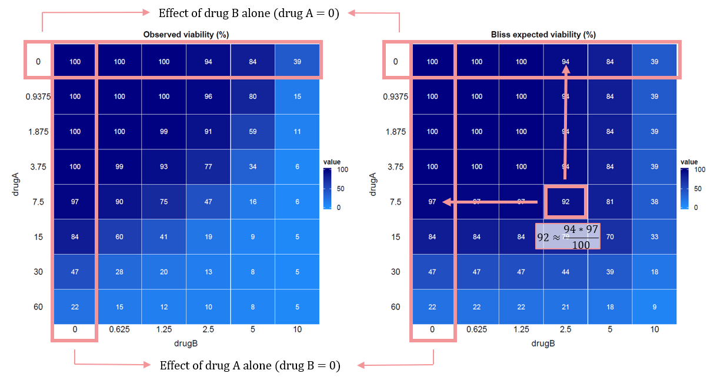

Theory
theory.Rmd🎯 Aim
Characterizing interactions between drugs is an area of major
interest for drug
development, as exploiting synergism between drugs could allow
increasing treatment efficacy using lower doses of single drugs, and
avoiding antagonistic interaction is needed to maintain the therapeutic
efficacy of drugs. Broadly speaking, synergism and antagonism could be
defined as an increase or a reduction of the effect of a drug
combination compared to the effect expected for the combination on the
basis of the single agent effects.
The EDITH package enables the synergistic effects of two
or three drugs to be explored, based on cell viability data obtained
from combination experiments. The package is designed to analyze and
visualize drug interactions and implements a widely used method for
assessing drug interactions: the Bliss independence model.
📐 Bliss independence model
The Bliss independence model is a mathematical framework used to evaluate the independence (ie. the absence of any interaction effect) of two drugs when they are administered in combination. The general form of Bliss independence model is the following equation:
where:
- is the effect of drug A,
- is the effect of drug B,
- is the expected effect of the drug combination.
In the case of a cancer cell population, the effect will correspond to the fraction of cells killed by the drug(s). For example, if drug A kills 30% of the cells, and drug B kills 40% of the cells . According to the Bliss independence model, the expected effect of the combination of drugs A and B would be: This means that the combination of drugs A and B is expected to kill 58% of the cells if they act independently.
The Bliss equation can be recast in terms of unaffected cells as follows:
where:
- is the fraction of unaffected cells by drug A (ie. viability after treatment with drug A),
- is the fraction of unaffected cells by drug B (ie. viability after treatment with drug B),
- is the expected fraction of unaffected cells by the drug combination.
For example, if drug A leaves 70% of the cells unaffected, and drug B leaves 60% of the cells unaffected . According to the Bliss independence model, the expected fraction of unaffected cells by the combination of drugs A and B would be:
This means that the combination of drugs A and B is expected to leave 42% of the cells unaffected if they act independently.
The generalized form of the Bliss equation for a combination of n drugs is:
where:
- indexes the drugs in the combination,
- is the fraction of unaffected cells by drug .
🚨 Important: The values in the input matrix must correspond to the percentage of living cells.
👀 ️Visual example
To illustrate the Bliss independence model, consider the following example with two drugs, A and B:

🔍 Evaluation of drug interactions
To evaluate the interaction between drugs, the observed effect of the drug combination is compared to the expected effect calculated using the Bliss independence model. This is simply done by subtracting the observed effect from the expected effect:
🧩 Interpretation:
The interaction can be classified into three categories based on this comparison:
- ⚡ Synergy:More cells killed than expected → positive interaction effect ()
- ⚖️ Additivity: As many cells killed as expected → no interaction effect ()
- ⚔️ Antagonism: Less cells killed than expected → negative interaction effect ()
👀 ️Visual example
To illustrate the interaction estimation, consider the following example with two drugs, A and B:

🧮 Quantification of drug interactions
In addition to this point-bypoint estimation, different measures can
be used to quantify drug interactions. In the EDITH
package, we implement three different indexes: the additive index, the
combination index and the efficacy index.
🚨 Important: These indexes can be used if and only if the dilution factor is fixed between all the dose levels for each drug used in the cytotocixity assay.
🚨 Important: These indexes can be used to compared different experiments if and only if the same drug concentration ranges and the same dilution factors are used in all experiments.
🌟 Combination index
According to the approach proposed by Lehár (Lehár et al., 2007, 2008, 2009), the combination index, is calculated as follows:
where:
- and are the dilution factors used in the cytotocixity assay for drugs A and B respectively,
- and are the matrices of the survival percentage for the experimental data and for the corresponding Bliss independence data, respectively.
The generalized form of the equation for a combination of drugs is:
where:
- is the dilution factor used in the cytotoxicity assay for drug ,
- and are the matrices of the survival percentage for the experimental data and for the corresponding Bliss independence data, respectively.
🧩 Interpretation: The higher the combination index, the more synergistic the drugs are.
🌟 Efficacy index
An efficacy index is calculated as follow:
where:
- and are the dilution factors used in the cytotocixity assay for drugs A and B respectively,
- is the matrix of the survival percentage for the experimental data.
The generalized form of the equation for a combination of drugs is:
where:
- is the dilution factor used in the cytotoxicity assay for drug ,
- is the matrix of the survival percentage for the experimental data.
🧩 Interpretation: The higher the efficacy index, the more lethal the drugs are.
🌟 Additivity index
An additivity index is calculated as follow:
where:
- and are the dilution factors used in the cytotocixity assay for drugs A and B respectively,
- is the matrix of the survival percentage for the corresponding Bliss independence data.
The generalized form of the equation for a combination of drugs is:
where:
- is the dilution factor used in the cytotoxicity assay for drug ,
- is the matrix of the survival percentage for the corresponding Bliss independence data.
🧩 Interpretation: The higher the additivity index, the more lethal the drugs are supposed to be according to the Bliss independance model.